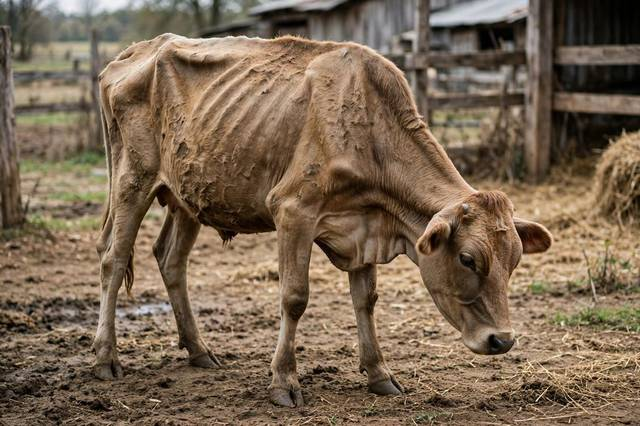
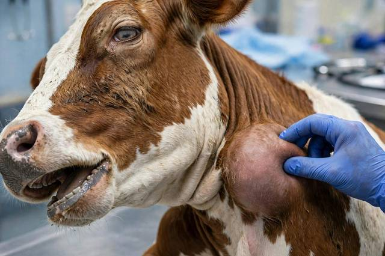
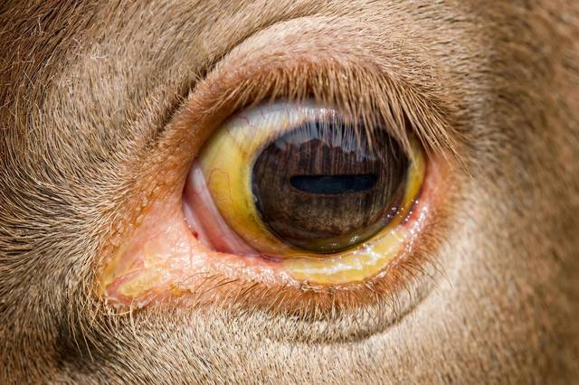
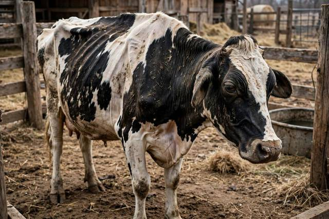

Theileriosis in Cattle: Signs, Diagnosis and Control
Global Livestock Health & Veterinary Learning
Cattle & Buffalo Health
Veterinary Education
Theileriosis is a tick-borne protozoal disease of cattle. In parts of Asia, tropical theileriosis associated with Theileria annulata is an important cause of illness and production loss. Disease severity varies with parasite species, cattle breed, age, immunity and local epidemiology.
On this page: clinical signs, causes and transmission, diagnosis, treatment principles and prevention.
Clinical Signs
1
Fever(High body temperature)
2
Reduced appetite(Cow eats less or refuses feed)
3
Weakness(Progressive weakness and dullness)
4
Enlarged superficial lymph nodes(Swollen lymph nodes, especially those easy to feel)
5
Anaemia and pale mucous membranes(Pale gums and inner eyelids from anaemia)
6
Jaundice(Yellowing of the eyes and mucous membranes)
7
Nasal or ocular discharge(Discharge from the nose or eyes)
8
Respiratory difficulty(Laboured or difficult breathing)
9
Reduced milk yield(Milk production drops)
10
Weight loss(Progressive loss of body condition)
11
Dehydration(Dry muzzle and sunken eyes)
FeverReduced appetite

Weakness

Enlarged lymph node in front of the shoulderPale inner eyelid, anaemia

JaundiceNasal dischargeRespiratory difficultyReduced milk yieldWeight loss and poor condition

Dehydration
Causes and Transmission
Theileria parasites are transmitted by infected ticks. Tick exposure, lack of effective control and introduction of susceptible animals into endemic areas increase risk. Different Theileria species cause different disease patterns, so species identification matters.
Pathogenesis
Theileria parasites are injected by infected ticks and first invade white blood cells (lymphocytes), causing them to multiply uncontrollably — this is why the lymph nodes swell. The parasites then develop into merozoites that invade red blood cells, destroying them and causing anaemia and jaundice.
The massive immune response produces high fever, and the destruction of red cells and damage to the lungs and other organs can lead to laboured breathing, collapse and death. Recovered animals may remain carriers.
Veterinary Diagnosis
Diagnosis combines history of tick exposure, clinical examination, lymph-node assessment and blood testing. Blood or lymph-node smears may reveal parasite stages, while PCR and other laboratory methods can improve confirmation and species identification. Other tick-borne diseases can produce similar signs.
Differential Diagnosis
Several conditions can look similar. A veterinarian distinguishes them by the signs, history and laboratory findings:
Bovine babesiosis — causes fever and anaemia with red urine, but without lymph node enlargement.
Bovine anaplasmosis — causes anaemia and jaundice without enlarged lymph nodes.
Bovine tuberculosis — causes chronic wasting without the fever spikes of theileriosis.
Trypanosomiasis — causes anaemia and weight loss, usually without the lymph node swelling of theileriosis.
Treatment and Case Management
Treatment depends on the Theileria species, disease stage, animal condition and locally approved medicines. Specific antiprotozoal drugs may be used by veterinarians where authorised, alongside supportive care such as fluids or treatment of complications when indicated. Do not use a drug or dose from an online post without veterinary confirmation and label checks.
Important: High fever with enlarged lymph nodes, marked anaemia, breathing difficulty or rapid deterioration requires prompt veterinary attention and diagnostic testing.
Recommended Medicines
1
Antiprotozoal – Buparvaquone(Kills the Theileria parasite)2.5 mg/kg IM
2
NSAID – Meloxicam(Reduces fever and pain)0.5 mg/kg IV/SC once
3
Fluid therapy – IV fluids(Supports a dehydrated or weak animal)As prescribed by a veterinarian
⚠ Important Tips:
Use antiprotozoal treatment only under veterinary advice and after diagnostic testing.
Never use a drug or dose from an online post without veterinary confirmation.
High fever with enlarged lymph nodes needs prompt veterinary attention.
Control ticks to prevent theileriosis.
Injection — vet-administered onlyIV fluid therapy — vet-administeredMedicines — only as prescribed by a veterinarian
Prevention and Farm Management
Use an integrated tick-control programme based on local tick species and resistance patterns
Inspect animals regularly and treat according to veterinary advice and product labels
Quarantine and examine incoming cattle for ticks and illness
Maintain clean housing and manage vegetation where practical
Discuss vaccination availability and suitability with local veterinary services
Record cases and treatment outcomes to monitor herd-level patterns
Key Takeaway
Accurate identification of the Theileria species and consistent tick control are central to effective herd management.
Keep herd health records, consult a qualified veterinarian and follow the animal-health authority's current guidance for your region.
References
MSD Veterinary Manual. Merck & Co., Inc.
Radostits, O.M., Gay, C.C., Hinchcliff, K.W., Constable, P.D. Veterinary Medicine: A Textbook of the Diseases of Cattle, Horses, Sheep, Pigs and Goats.
WOAH (World Organisation for Animal Health). Manual of Diagnostic Tests and Vaccines for Terrestrial Animals.
WOAH (World Organisation for Animal Health). Terrestrial Animal Health Code.
Frequently Asked Questions
What are the symptoms of theileriosis in cattle?
Fever, reduced appetite and weakness, with enlarged superficial lymph nodes, anaemia, pale mucous membranes and sometimes jaundice. There may be nasal or eye discharge, respiratory difficulty, reduced milk yield and weight loss.
What causes theileriosis in cattle?
Theileriosis is caused by Theileria parasites transmitted by infected ticks. In parts of Asia, tropical theileriosis associated with Theileria annulata is an important cause of illness and production loss.
How is theileriosis in cattle diagnosed?
Diagnosis combines history of tick exposure, clinical examination, lymph-node assessment and blood testing. Blood or lymph-node smears may reveal parasite stages, while PCR and other laboratory methods can improve confirmation and species identification.
How is theileriosis in cattle treated?
Treatment depends on the Theileria species, disease stage, animal condition and locally approved medicines. Specific antiprotozoal drugs may be used by veterinarians where authorised, alongside supportive care. Always consult a veterinarian.
How can theileriosis in cattle be prevented?
Use an integrated tick-control programme, inspect animals regularly, quarantine and examine incoming cattle, and discuss vaccination availability and suitability with local veterinary services.
What is the treatment for theileriosis in cattle?
Treatment depends on the Theileria species, disease stage, animal condition and locally approved medicines. Specific antiprotozoal drugs may be used by veterinarians where authorised, alongside supportive care, so always consult a veterinarian.
Why does my cow have swollen lymph nodes?
Enlarged superficial lymph nodes with fever, weakness and anaemia are typical of theileriosis, a tick-borne disease. Blood or lymph-node smears and PCR can confirm the diagnosis, so a veterinarian should assess the animal.
گائے میں تھیلریوسس کی علامات کیا ہیں؟
بخار، بھوک میں کمی، کمزوری، لمف نوڈز کا بڑھ جانا، خون کی کمی اور دودھ میں کمی تھیلریوسس کی علامات ہیں۔ یہ بیماری چیچڑوں سے پھیلتی ہے۔ علاج کا فیصلہ ویٹرنری ڈاکٹر کرتا ہے، اور چیچڑوں پر قابو بچاؤ کا اہم طریقہ ہے۔
✍️ Written by Dr. Shahid Bilal Depal, DVM (PVMC RVMP #15068)
This guide is for educational purposes. Consult a registered veterinarian for diagnosis and treatment.